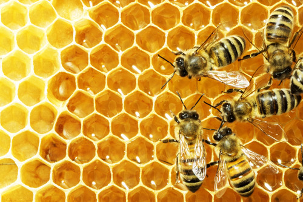

A Tribute to Bees
Earth's Essential Pollinators

- There are nearly 20,000 known species of bees.
- Bees are found on every continent except Antartica.
- Approximately one third of the food we eat is the result of honey bee pollination
- A colony of bees consists of 20,000-60,000 honey bees and one queen. Worker honey bees are female, live for about 6 weeks and do all the work.
- There are three types of bees in every hive: a queen, worker bees, and drones.
- The queen bee can live up to 5 years and is the only bee that lays eggs. A productive queen can lay up to 2,500 eggs per day.
- Only drones are male. They are larger than the worker bees, have no stinger and do no work. All they do is mate.
- The bees’ buzz is the sound made by their wings which beat 11,400 times per minute.
- One bee has to fly about 90,000 miles – three times around the globe – to make one pound of honey.
- The average bee will make only 1/12th of a teaspoon of honey in its lifetime
- Bees have 2 stomachs- one for eating and one for storing nectar.
- Honey lasts an incredibly long time. An explorer who found a 2000 year old jar of honey in an Egyptian tomb said it tasted delicious!
- Bees can be trained to locate buried landmines.
- Honey bees communicate with one another by dancing.
- If the queen bee dies, workers will create a new queen by selecting a young larva (the newly hatched baby insects) and feeding it a special food called “royal jelly“. This enables the larva to develop into a fertile queen.